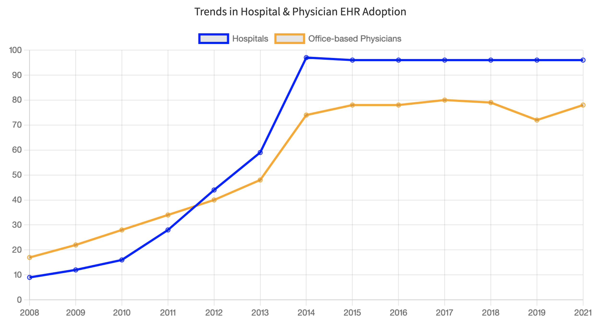

The content on this website is under active development. Please proceed with caution.
FHIR from 10,000 Feet
After reading this module, you will be able to answer the following questions:
-
What role does FHIR play in health data interoperability?
FHIR is the ubiquitous specification governing interoperability of health systems. This is driven by regulation in the US and FHIR’s pragmatic implementation-first approach.
-
Why is FHIR relevant for research?
At a high level, FHIR is well-adopted throughout the US healthcare system thanks to ONC and CMS rules. FHIR’s openness, active development with an implementer-first approach, and extensibility make it a flexible tool for research.
-
What are areas where FHIR can enhance research?
1) Providing direct access to health data through a standardized API that would otherwise have to be accessed with one-off analyst work or through a more complex workflow.
2) Defining a data model for research that can be implemented using existing FHIR resources and API endpoints.
EHRs and interoperability
Health care organizations have been widely adopting electronic health record (EHR) systems throughout the US since 2014 (see graph below).
70% in 2014.">
However, EHRs and their subsystems often cannot exchange data with other systems–they are not interoperable. Improving interoperability remains an important challenge for implementers and users of EHRs, including researchers who wish to use EHR data in their work.
FHIR is one of the key technologies that enables interoperability of health-related data.
HIMSS1 defines interoperability as:
The ability of different information systems, devices and applications (systems) to access, exchange, integrate and cooperatively use data in a coordinated manner, within and across organizational, regional and national boundaries, to provide timely and seamless portability of information and optimize the health of individuals and populations globally.
ONC2 describes the importance of interoperability:
Interoperability helps clinicians deliver safe, effective, patient-centered care. It also provides new ways for individuals and caregivers to access electronic health information to manage and coordinate care. Advancing interoperability is now an essential part of most health care activities ranging from health equity to public health emergency response.
Below is additional background on interoperability and the technologies that enable it, including FHIR.
FHIR is key to US health data interoperability
The ONC 21st Century Cures Act (known as the “Cures Act”) supports seamless and secure access to health information. As part of Cures Act, ONC added a set of interoperability criteria to the existing 2015 Health IT Certification Program. These criteria include:
“Standardized access to single patient and multiple patient services via an API(s) using the HL7 FHIR standard” (ONC 2022)
Use of United States Core Data for Interoperability (USCDI) standard as part of these APIs (ONC 2020), which is implemented in FHIR with the US Core FHIR Implementation Guide
While the Health IT Certification Program is voluntary, CMS provides a financial incentive to health systems that use certified EHRs. This incentive program has led to many EHRs and other health data systems supporting FHIR and USCDI.
FHIR is ubiquitous
As of 2019, 84% of hospitals had adopted FHIR and FHIR is widely used in the health technologies outside of EHRs. For example, Apple’s HealthKit uses FHIR for accessing data from healthcare institutions. The major public cloud providers (Amazon, Google, and Microsoft) also provide FHIR functionality. In addition, FHIR is an international standard and is actively used outside the US.3
FHIR’s focus on implementation is beneficial to research uses
FHIR has several characteristics that benefit research:
The FHIR specification is open source and actively improved through open source development principles.
There are no fees when using FHIR (though technology vendors may charge fees related to using their products that implement FHIR).
FHIR uses common web technologies, which are widely used in technology outside of health care. Because software developers are familiar with these web technologies, implementing FHIR systems is cost effective even if software developers aren’t familiar with FHIR.
The FHIR specification can be easily customized and extended for specific use case (e.g., representing oncology data).
For more background, please see the Fundamental Principles of FHIR from HL7’s documentation.
FHIR provides a uniform data model and API for sharing data
The FHIR specification provides an extensible set of “resources” to structure different types of data, like Patient for representing demographics and administrative information about an individual, and Observation for representing measurements and assertions about a patient or other subject.
These FHIR resources are designed to include data elements that cover the majority of use cases, and the FHIR specification provides mechanisms for extending data models when necessary.
FHIR also provides an API (Application Programming Interface) that provides a standardized way for systems to request and receive FHIR data.
The FHIR specification also discusses security concerns related to FHIR and includes recommended best practices.
Research implications
These features of FHIR, along with its widespread adoption, enable researchers to access data in a standard and reproducible way. FHIR also facilitates direct data integration with other software (e.g., mobile apps), which would be difficult to accomplish otherwise.
For more information, please see FHIR from 1,000 Feet.
References
Footnotes
HIMSS is the Healthcare Information and Management Systems Society. Its mission is to “reform the global health ecosystem through the power of information and technology.”↩︎
ONC is The Office of the National Coordinator for Health Information Technology.
From their website:
↩︎ONC is the principal federal entity charged with coordination of nationwide efforts to implement and use the most advanced health information technology and the electronic exchange of health information.
For example, there are many internationally-focused FHIR Implementation Guides: http://hl7.org/fhir/uv/.↩︎